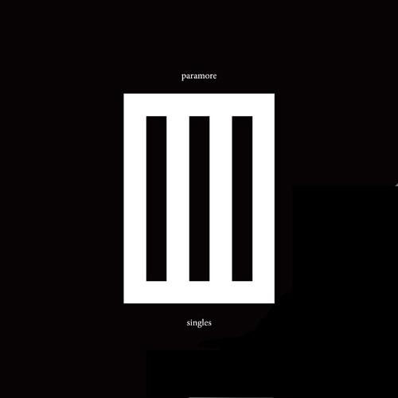
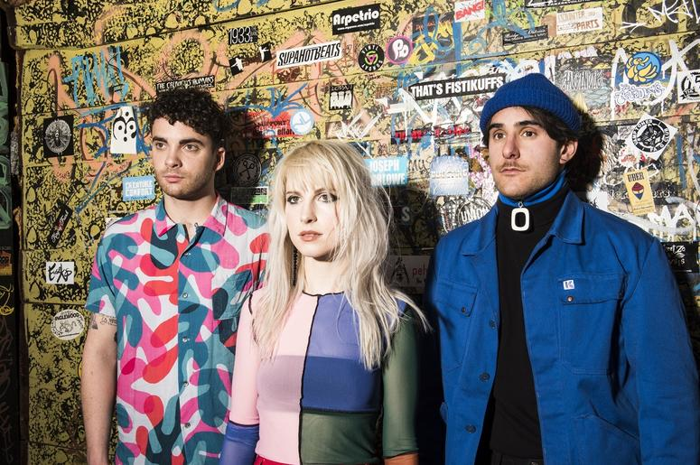

- After Laughter
- Paramore
- 
- Singles Club EP
Paramore
Genre-Neutral Band of Friends
Bio
Paramore began in Franklin, TN, in 2004 with Farro brothers Josh, on guitar, and Zac, on drums, bassist Jeremy Davis, and vocalist Hayley Williams. They have had many lineup changes over the years, with several different guitarists, bassists, and drummers before settling into their current lineup consisting of Hayley Williams, Taylor York, and Zac Farro. They have released 5 studio albums with the Fueled by Ramen label, with an evolving sound that always stays true to who they are in the moment. They have just finished the album cycle for their fifth full-lenth album, After Laughter, with five world-wide tours and their annual Parahoy cruise.
Parahoy
The annual 4 day, 2,600 passenger cruise to the Bahamas with Paramore and friends. With acitivties like Q&A with the band, Paraoke, and several pool deck performances by the legends themselves, it's an unforgettable experience you don't want to miss!
All We Know Is Falling
Released July 26, 2005
Length: 35:51
- All We Know | 3:14
- Pressure | 3:06
- Emergency | 4:00
- Brighter | 3:43
- Here We Go Again | 3:46
- Never Let This Go | 3:41
- Whoa | 3:21
- Conspiracy | 3:42
- Franklin | 3:19
- My Heart | 3:59
Riot!
Released June 12, 2007
Length: 38:58
- For a Pessimist, I'm Pretty Optimistic | 3:48
- That's What You Get | 3:40
- Hallelujah | 3:23
- Misery Business | 3:31
- When It Rains | 3:35
- Let the Flames Begin | 3:18
- Miracle | 3:29
- Crushcrushcrush | 3:09
- We Are Broken | 3:38
- Fences | 3:18
- Born for This | 3:58

Brand New Eyes
Released September 29, 2009
Length: 40:14
- Careful | 3:50
- Ignorance | 3:38
- Playing God | 3:03
- Brick by Boring Brick | 4:14
- Turn It Off | 4:20
- The Only Exception | 4:28
- Feeling Sorry | 3:05
- Looking Up | 3:29
- Where the Lines Overlap | 3:18
- Misguided Ghosts | 3:01
- All I Wanted | 3:48
Singles Club EP
Released December 14, 2011
Length: 13:15
- Monster | 3:18
- Renegade | 3:28
- Hello Cold World | 3:23
- In the Mourning | 3:05
Paramore
Released April 5, 2013
Length: 63:48
- Fast in My Car | 3:42
- Now | 4:07
- Grow Up | 3:50
- Daydreaming | 4:31
- Interlude: Moving On | 1:30
- Ain't It Fun | 4:58
- Part II | 4:41
- Last Hope | 5:09
- Still Into You | 3:36
- Anklebiters | 2:17
- Interlude: Holiday | 1:09
- Proof | 3:15
- Hate to See Your Heart Break | 5:09
- (One of Those) Crazy Girls | 3:32
- Interlude: I'm Not Angry Anymore | 0:52
- Be Alone | 3:40
- Future | 7:51
After Laughter
Released May 12, 2017
Length: 42:31
- Hard Times | 3:02
- Rose-Colored Boy | 3:32
- Told You So | 3:08
- Forgiveness | 3:39
- Fake Happy | 3:55
- 26 | 3:41
- Pool | 3:52
- Grudges | 3:07
- Caught in the Middle | 3:34
- Idle Worship | 3:18
- No Friend | 3:23
- Tell Me How | 4:20